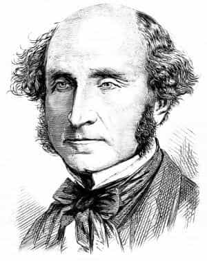

< < < Back
You Must Be Prepared To Die For The Fourth Amendment – Return Of Kings
We live in a digital age of mass surveillance. This should come as no surprise to any of the red-pilled readership here at Return of Kings. From Edward Snowden’s revelations about the National Security Agency’s metadata gathering program to cameras on every street corner, it is very easy to lose sight of what is truly important in this national debate: All arguments, debates and discussions boil down to one question:
Are you prepared to die for the Fourth Amendment to the Constitution of the United States?
The right of the people to be secure in their persons, houses, papers, and effects, against unreasonable searches and seizures, shall not be violated, and no Warrants shall issue, but upon probable cause, supported by Oath or affirmation, and particularly describing the place to be searched, and the persons or things to be seized.
The Fourth Amendment has been interpreted as a right to privacy, and has its origins in English Law whereas there were certain places that the King could not go. “A man’s home is his castle” as was found in English legal texts dating to the 17th century.
In this age of the threat of terrorism, certain liberties are under siege by many well-meaning individuals and policymakers. Many (if not most) have the usually-laudable goal of preventing people from dying in terrorist attacks. Some (probably a minority) support mass surveillance to further dishonorable means. I can respect those individuals who are truly well-meaning, even if they are wrong.
They are wrong because the Fourth Amendment is very important, and worth risking our lives for. Sacrificing the Fourth Amendment upon the altar of saving our lives is the wrong choice: Benjamin Franklin put it perfectly when he said, “Those who would sacrifice freedom for security deserve neither.”
South Park, Hypocrisy and the Great River
Americans, since their beginning in 1775, have always made lofty statements about their rights. However, making lofty statements is easy: defending those rights is difficult, and men could die. Although I am well-known for my theoretical support for Great Britain in the American Revolution (were I alive in 1775), I have the utmost respect for those Founding Fathers who not only made lofty statements about individual rights, but were also willing to sacrifice their lives to protect/preserve them. I have little to no respect for any man who claims to believe in something, yet retreats as a coward when facing adversity in defending those beliefs.
There was a controversy a few years ago regarding an episode of South Park where an image of Mohammed was to be shown. Although Trey Parker and Matt Stone fought hard to have the image of Mohammed included in the episode, Comedy Central censored the poorly-animated image of Mohammed out. In a deliberate irony, Parker and Stone called out the cowardice of Comedy Central in the very same episode: The character Stephen Stoch (Butter’s father) gives a South Park soliloquy on the difference between believing in something and merely giving lip service.
For those that watch South Park, Butter’s dad had the unusual role of giving the episode’s political message.
In short, if you are willing to risk death for yourself and your children in a terrorist attack to preserve the Fourth Amendment, I laud you as an intellectually honest individual who truly believes in the concept of privacy. I do this in a way similar to how Roosh respects all men who risk humiliation and actually attempt to have sex with attractive women.
But if you support dismantling the National Security Agency’s metadata program, but would re-instate it if your own life, or the lives of your children, were at stake then I must brand you a coward and hypocrite. Supporting true civil liberties (not in the way SJW’s think of them) is hard: standing up for your rights can get you killed. Horribly. In a hail of rusty nails and ball bearings.
Is Nothing Worth Dying For?
In 1964, a man named Ronald Reagan gave a speech at the Republican National Convention titled “A Time for Choosing.” Aptly named, future-President Reagan would put the following to the American people:
If nothing in life is worth dying for, when did this begin — just in the face of this enemy (communism)? Or should Moses have told the children of Israel to live in slavery under the pharaohs? Should Christ have refused the cross? Should the patriots at Concord Bridge have thrown down their guns and refused to fire the shot heard ’round the world? The martyrs of history were not fools, and our honored dead who gave their lives to stop the advance of the Nazis didn’t die in vain.
As a people, Americans must decide that it would be preferable to die on their feet as free men whose privacy rights have not been violated than to live as slaves whose lives have been laid bare to the government. As Reagan said, the martyrs of history were not fools. We have everything to lose when we allow the fear of physical violence to convince us to give up our rights. In the Cold War, this was self-evident to the West when tens of millions were starving to death under Mao or being sent to survival courses in Siberia under the Soviet Union.
What This Means For Us Today
We must not allow the threat or fear of violence silence the truth. Ann Coulter and Milo Yiannopolis were wrong to cancel their speaking appearances at Berkeley under threat of violence from “antifa” and other SJW organizations. I assume both Ann and Milo support the right to free speech: if they are truly dedicated, I would put it to them that they should stand up at the podium even if they know for sure that a left-wing terrorist will shoot them dead. The moment we silence our voices to avoid violence from SJW’s is the moment we surrender our moral authority: we of the red pill are brave warriors, and the SJW’s the cowards.
Neither should have backed down in the face of SJW violence.
A Rendezvous With Destiny
Last month, I took a vacation to Hawaii while I was between jobs. While enjoying the free booze served in first class I had the opportunity to really think about the issues of privacy and what was really worth risking one’s life. I realized that if I am prepared to die for the Fourth Amendment, I cannot support the NSA’s metadata program even with the best of intentions (saving lives).
When a sudden jolt of fear hit me at the prospect of being blown to pieces by a suicide bomber, I remembered I had felt that same fear before: in Iraq and Afghanistan while serving in the United States Army. As undesirable as the prospect is, to this day I am still willing to risk death or severe maiming in the name of the rights enumerated in the Constitution as was originally written and intended, not the perversions of subsequent Supreme Courts (excepting slavery).

“A man who has nothing for which he is willing to fight, nothing which is more important than his own personal safety, is a miserable creature…” -John Stuart Mill
Edward Snowden is no hero: heroes don’t run off to even more tyrannical nations than the ones they are ostensibly protesting. Yet I am glad he leaked the information about the NSA’s metadata program and he was right to do so. We, as red-pilled men, must decide that our freedom is more important than our lives, and that there are some things greater than our desire to go on living, banging beautiful women and improving ourselves. We should fight like hell to annihilate those who wish us harm, we should secure our borders (which would reduce the chances of having to risk our lives in the name of the Fourth Amendment), but most importantly of all we should remain intellectually consistent with our beliefs and summon the courage to to stand up for them in the face of danger.
Read More: The Power Of Conscience: Oliver Stone’s “Snowden”